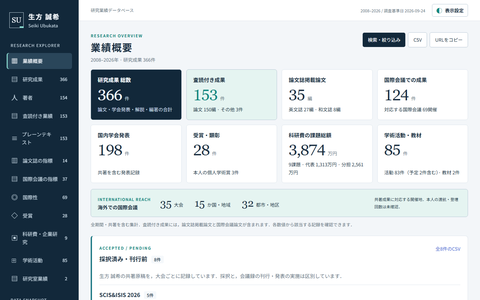

生方 誠希 (Seiki Ubukata)
大阪公立大学
大学院情報学研究科 基幹情報学専攻
工学部 情報工学科
准教授
E-mail: ubukata (at) omu.ac.jp
599-8531 大阪府堺市中区学園町1-1
Phone: 072-254-9355
599-8531 大阪府堺市中区学園町1-1
Phone: 072-254-9355
Research Explorer

生方誠希 Research Explorer
研究成果や学術活動を探せる研究業績データベースです．
サイトを開く →